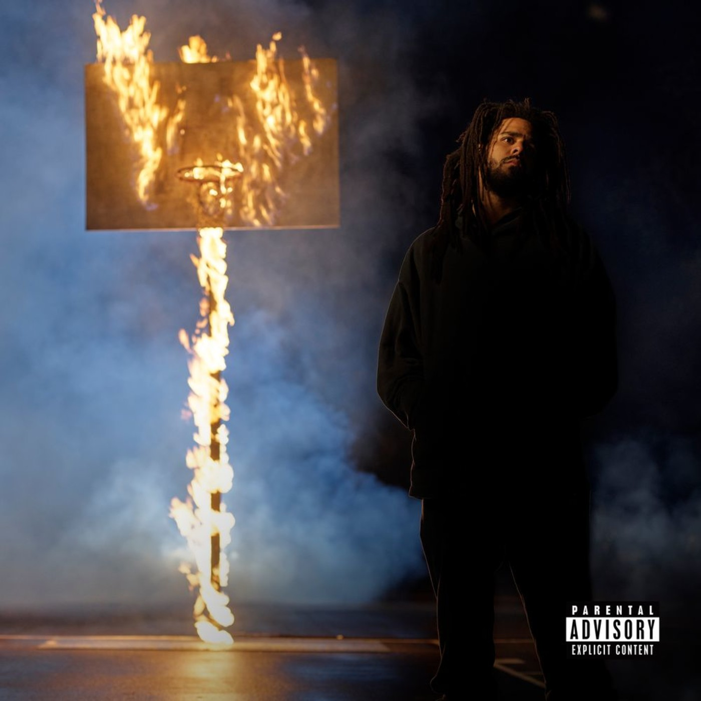
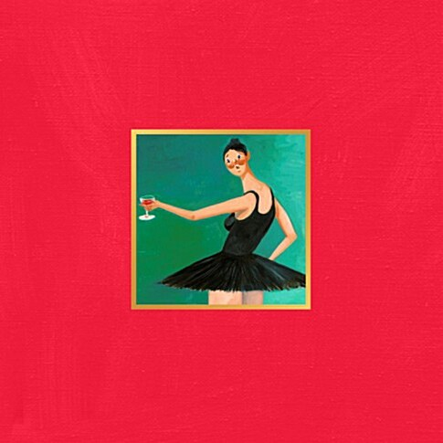

J. cole - 2014 Forest Hills Drive
이 음반의 제목은 제이 콜의 유년 시절 살았던 노스캐롤라이나주 페이엣빌 집 주소에서 따온 것이다.
집은 2003년 그가 고등학교를 졸업한 후 뉴욕의 세인트 존스
대학교에 다니게 되었을 때 담보로 팔리게 되었다.
후에 2014년 래퍼가 된 그는 그 집을 다시 사게 되었다.
2014 Forest Hills Drive의 주된
이야기는 노스캐롤라이나 주에서 떠날 때의 이야기, 자신의 꿈을 쫓아 뉴욕으로 오게 된 이야기이다.
|

Post Malone - Hollywood's Bleeding
여러 장르를 능숙하게 운용하는 포스트 말론은 스트리밍 시장을 위해 맞춤형 앨범을 들고서 컴백했다. 다재다능한 그는 마치 카멜레온처럼 랩, 컨트리, 소프트 록, R&B, 팝,
포크, 컨트리 음악들이 용광로 속에서 용해되며 여러 장르들이 하나가 된다. 그리고, 거의 모든 곡 안에 훌륭한 후렴이 귀에 박힌다.
본질적으로는 70년대 엘튼 존이나 빌리 조엘처럼 누구나 좋아할 만한 멜로디를 추구하는 대중음아가지만, 겉으로는 'Lil'로 시작하는 요즘 랩 스타들처럼 후드정서라는 두꺼운 외투를 위에
걸쳐 입고 있다. 그래서 드레이크처럼 어둑하고 먹먹한 베이스와 멜랑꼴리한 신스 멜로디를 필두로 비교적 널찌간 공간감과 미니멀한 비트를 곡 안에 채워 넣어 놨다.
|

Kanye West - Ye
7곡, 24분이라는 짧은 길이의 이 앨범은 칸예의 정신세계에 대한 안내서 역할을 한다.
대중으로부터 음악적으로는 인정받지만, 정치 성향, 논란이 되었던 발언들, 이해하기 힘든 행동들로 '미친놈'의 이미지가 박혀버린 칸예 웨스트의 정신적인 어려움을 비롯해, 그가 느끼는
다양한 감정들을 진솔한 가사들을 통해서 풀어나간다.
베테랑 프로듀서 Mike Dean과 칸예의 프로듀싱이 인상 깊었다. 이 앨범 다음에 발매한 'KIDS SEE GHOST'와 비슷한 느낌의 트랙들도 찾아볼 수 있었으며, 어느 정도의
로우파이적인 사운드도 섞여있고, 똑똑한 샘플링들도 많이 찾아볼 수 있었다.
개인적으로 가장 인상 깊었던 샘플링은 5번 트랙 'No Mistakes'에서 Slick Rick의 샘플을 끌어다 쓴 것으로, 곡에서 차지하는 비중이 작음에도 불구하고 무척 적절하게
끼워 넣어서 인지, 기억에 오래 남았다.
|

Kendrick Larmar - DAMN
뚜렷한 주제의식과 훌륭한 스토리텔링을 갖춘 컨셉트 앨범으로 지금의 위상까지 올라온 래퍼, 켄드릭 라마가 내놓은 새 앨범엔 의외로 음반을 관통하는 주제가 없다.
현재의 자신을 구성하고 있는 키워드들을 트랙의 이름으로 나열했지만, 그것들이 그의 고향인 컴튼(Compton)의 실상을 고발하거나 흑인의 억압된 삶을 대변하고 있지 않다.
[DAMN.]에서의 화자는 특정 공동체를 변호, 고양하기보단 그저 자기 자신에 내재된 복잡한 감정들을 설파하려고 한다.
|

J. cole - The Off-Season
명성과 그의 대가에 대한 고찰, 유년 시절 당했던 폭력으로부터 발화한 정신적 트라우마, 셀레브리티로서의 불안감과 힙합 신 내에서의 고립감 등 The Off-Season의
주요 모티브들은 힙합의 울타리 안에서는 클리셰나 진배없다.
하지만 익숙한 식재료를 활용해 미슐랭 스타를 받아 내는 셰프의 수완처럼, 제이 콜에게는 진부함을 진솔함으로
탈바꿈시키는 재주가 있다.
제이크 원의 스모키한 비트 위에서 콜은 파로아 먼치의 전설적인 캐치프레이즈를 인용해 고결한 분위기를 연출한다.
m y . l
i f e에서는 고전 모 타운 샘플과 분간할 수 없는 모레이의 호소력 짙은 음색이 큰 역할을 했다. 그런데 그 제이 콜의 앨범에서 가장 뛰어난 벌스가 '영국 출신 멈블 래퍼'의 손에서
탄생했다는 사실을 누가 상상이나 했겠는가?
p r i d e . i s . t h e . d e v i l에서는 고전이 아닌 현시대ㅡ아미네의 'Can't
Confirm'을 샘플링했다ㅡ를 디깅하고 일상에서 주제를 찾는 콜의 방식이 잘 부각되고 릴 베이비의 가뿐하고 멜로디컬한 래핑은 방점을 찍는다. 하지만 전세기에서의 유흥을 위해 거액을
지불하고 5채의 집을 자
|

Kanye West - MBDTF
풍부한 사운드 텍스쳐와 그것을 받쳐주는 짜임새 있는 구성, 강렬한 멜로디, 아티스트가 최정상급 프로듀서이면서 래퍼이기에 나올 수 있는 구성을 극대화한 앨범이며 이후에 등장하는
수많은 힙합 뮤지션들의 사운드에 전 세계적으로 영향을 끼쳤다.
기존의 힙합과 자신의 스타일을 잘 융합해온 1~3집와 실험이 돋보인 4집으로 영향력을 넓혀가던 칸예는 이 앨범으로 정점을 찍어서 최고의 힙합 뮤지션일 뿐만 아니라 음악계를 이끌어나가는
거물 아티스트 중 하나로 평가되기 시작했다.
발매 이전에 이미 롤링 스톤지로부터 만점의 평점을 받았으며, 실제 앨범이 나오자 모든 매체로부터 올해의 앨범은 이미 정해졌다는 소리를 들으며 최고의 극찬을 받았다. 점수에 인색하기로
유명한 피치포크 미디어가 이 앨범에 무려 8년 만에 10점 만점을 줘서 화제가 되었고, 힙합 매거진 소스지로부터도 마이크 5개 만점을 받았다. 또한 이 앨범은 2014년 피치포크가
선정한 '여태까지의 2010년대 최고의 앨범'순위 1위에 당당히 이름을 올렸다.
피치포크가 2019년에 선정한 2010년대 최고의 앨범 2위에 올랐다. 1위는 프랭크 오션의 Blonde. 롤링 스톤에서 선정한 2010년대 최고의 앨범 순위에서도 1위를 차지했다.
|

Mac Miller - Circles
Circles 는 미국 래퍼이자 가수 인 Mac Miller 의 여섯 번째이자 마지막 스튜디오 앨범입니다.
REMember Music과 Warner Records가 2020 년 1 월 17 일 사후에 출시했으며 Miller가 2018 년 9 월 사망하기 전에 작업 중이었습니다. Jon
Brion 이 제작을 완료했습니다.
2018 년 9 월 7 일 사망 당시 Miller는 Circles 의 녹음 과정에 "잘 들어갔다" . "서로를 보완하고 원을 완성하는 두 가지 스타일"과 "서클에서 수영하기"라는
콘셉트를 담은 Swimming (2018) 의 컴패니언 앨범으로 의도되었습니다.
앨범에서 Miller와 함께 작업 한 Jon Brion 은 Miller와의 "시간과 대화를 바탕으로"제작을 완료했습니다.
Swimming and Circles 는 3 부작 앨범의 처음 두 편으로 계획되었으며, 마지막 작품은 Brion이 설명한 것처럼 "순수한 힙합 레코드"였습니다.
|
이센스 - 이방인
2019년 7월 22일에 발매된 대한민국의 힙합 뮤지션 E SENS의 정규 2집이다. 이센스가 감옥에서 출소한 뒤 처음으로 발매된 앨범 단위의 작업물로 출소로부터 발매되기까지
약 3년이라는 기간이, 전작인 The Anecdote로부터 약 4년이라는 기간이 걸렸다.
각종 인터뷰에서 밝힌 바에 따르면 이센스가 감옥을 출소하기 직전, 세상에 나가면 사람들이 본인을 손님으로 반겨주길 바라는 마음과 스스로는 손님으로서 선물 같은 것을 만들고 싶다는
염원을 담아, 앨범명을 '손님'으로 정했었다고 한다.[1] 하지만 출소한 뒤 자신이 감옥에 있던 사이에 세상은 들어가기 전과는 조금은 달라져있음을 느꼈고 6개월 정도의 앨범 준비
기간을 정하고 세상과 단절된 상황을 스스로 만들어냈다. 이후 작업 기간이 길어지기는 했지만 스스로가 세상 속에 섞여 있지 않은 상태에서 앨범명을 '이방인'이라고 재정하게 되었다고
한다.
본래는 믹스테입으로 발매될 예정이었으나 이후에 발매할 정규를 염두에 둔 채 오랜 시간 작업이 진행돼서인지 정규에 대한 생각들이 자연스럽게 반영되었다고 한다. 그래서 믹스테입으로
발매하기보다는 정규가 더 알맞다고 생각하여 정규로 발매하게 되었다
|

이센스 - Anecdote
[The Anecdote]는 아티스트 ‘이센스’로서의 진지한 고민들과 인간 ‘강민호’가 살아온 삶에 대한 소회가 담겨 있는 10개의 트랙으로 구성되어 있다. 삶에 대한
꾸밈없는 태도와 아련한 그리움이 담긴 10개의 트랙을 시간순서대로 담아 듣는 이에게 진한 감동을 선사한다. 특히 언제나 그랬듯이 직설적이고, 솔직한 이센스의 노랫말들은 이 앨범을 가장
빛나게 하는 부분이다. 그가 앨범에서 말하고 있는 삶에서 얻은 작은 깨달음들과 아직 풀리지 않은 숙제들은 많은 이들의 뜨거운 공감을 이끌어 내기에 충분하다. 또한 앨범을 들은 이후에도
깊은 여운 속에서 곱씹어 볼만한 가치가 있는 이야기들을 담고 있는 앨범이다.
[Back In Time]의 프로듀서인 ’오비(Obi)’가 이번 앨범 전체의 프로듀싱을 맡았다. 이번 앨범에서 오비는 90년대의 향수가 느껴지는 깊고 풍부한 사운드들로 앨범을 가득
채웠다. 일관된 컨셉의 비트들은 그 동안의 한국 힙합 음반들에서는 느껴볼 수 없었던 강렬하고 세련된 인상을 남기기에 충분하다. 이 앨범을 통해 한국의 힙합음악 팬들은 힙합 음악이 본래
어디에서부터 출발했고, 어떤 감성을 담고 있는 음악인지를 충분히 느낄 수 있을 것이다.
|